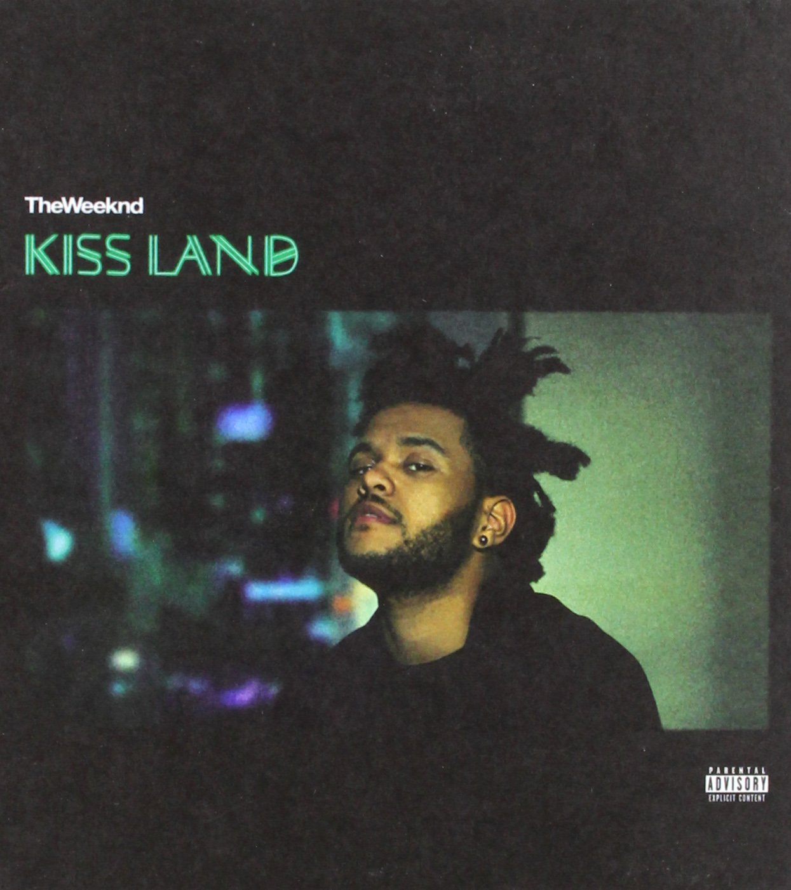
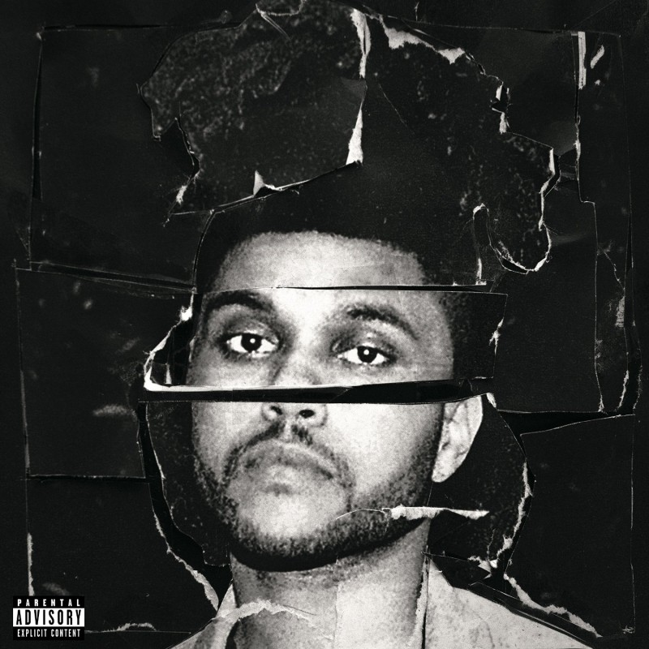
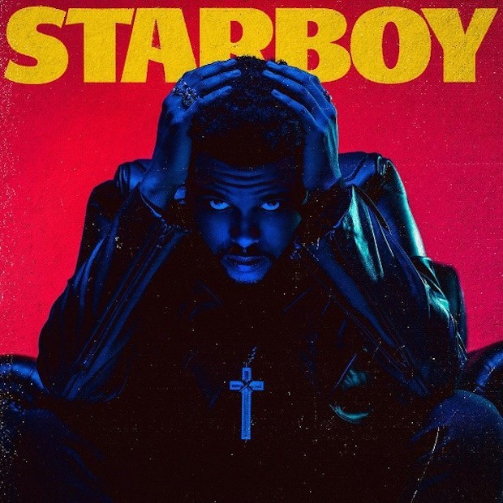
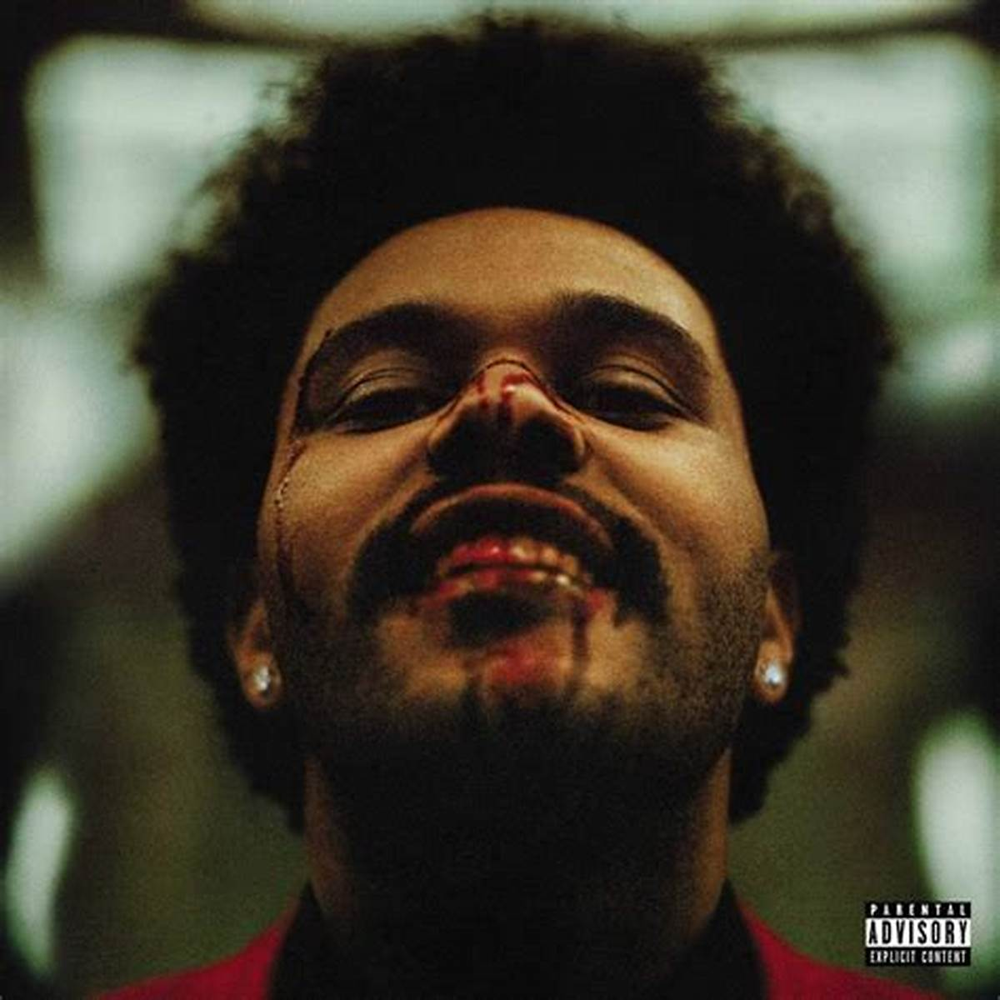
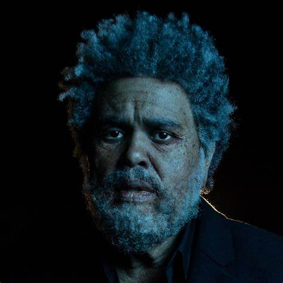
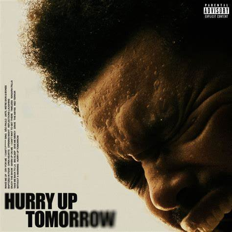

Albuns de estudio

Lançado em 2013, KISS LAND foi o albúm de estreia de The Weeknd

Seu segundo álbum de estúdio, Beauty Behind the Madness, foi lançado em agosto de 2015 com grande sucesso comercial.

O terceiro álbum de estúdio do canadense, Starboy, foi lançado em novembro de 2016 e também foi bem-sucedido comercialmente.

Seu quarto album de estudio marcou sua quarta entrada na billboard hot 100.

Lançado em 2022, o DAWN FM é o album mais aclamado de The weeknd.

Seu ultimo album "hurry up tomorrow", marca o fim de uma trilogia e o fim de uma era para abel, que nao continuará a utilizar do alter ego "THE WEEKND".